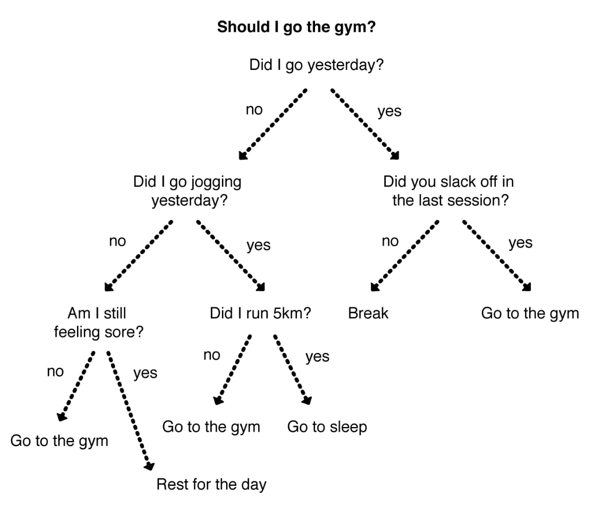
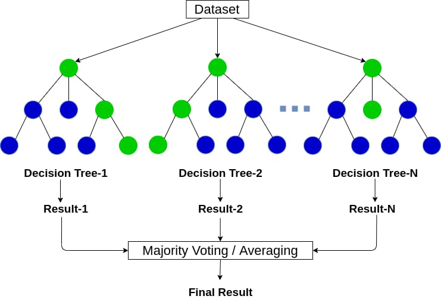

HOW MACHINE LEARNING WORKS
Machine Learning goal is to just analyze the way in which we Human
learn....and copy it on machines......
So now,our goal is to figure out how we (humans) learn before making
machines learn.
Let me ask u few questions....
-
If i show u few pics of helicopter and plane how are u able to
find which is helicopter?
-
How are u able to say who is best hitter.....best Scorer .....best
bowler...... Best all-rounder in a Cricket series?
-
If u are a pro bike rider then how learned to be a pro rider?
Think a second on what process is going on inside before answering
above questions
Let's look into first question
Let's ask a ancient King to find helicopter in pics.... Can he do
it.... Why?now... Can you do it.... S..... Why because u were feeded
with lots of pictures from your childhood through sources like
books, movies, or even in reality And u have data of all the
helicopter pics.... In your head....... And u analyzed patterns In
the pics.....and now u are trying to sync your patterns analyzed by
vast past data to sync with new data ...and you will confirm it as a
helicopter..... If the %of sync of patterns is enough
In 2nd case ,
To, say Who is the best player more accurately...... U have to
observe every player in every match of the series[ collect data of
every player for every ball ]........ and u will analyze By looking
at each ones special abilitys from performance [ data related to how
specific player contributed to each ball in the over ]........then
we will analyzing (outstanding) best player with special ability by
comparing players [data of each player with same special ability ]
In 3rd case,
U might be a pro rider now, but there must be a day when u first
touched it's handle bar.... like a absolute beginner....u might have
started slow...experimented few actions like Leaning bike at
turning...... And making sudden break at slippery surface.......u
might have done many actions till being a pro and Might have decided
...which actions give rewards for u and which are non
rewarding...... And will repeat that rewarding actions...learning
not to do non rewarding actions..... And repeating the similar
exploring for long time u must have became a pro....
The above described are the few methods [steps] in which we humans
learn.......
THIS IS THE WAY IN WHICH WE LEARN.......
WE WILL MIMIC THE SAME STEPS OF LEARNING FOR MACHINES TO MAKE
THEM LEARN ML MODEL.....
How we humans learn is by observing all the data[info] from the
world and making some conclusions.....
ML MODEL is like a virtual guy who observed data and made patterns
from it.
What we do in case of machines is...... We expose it to vast
data.....And help it to observe data and find notable patterns and
this patterns can be similarly compared to a explicitly coded
program by human ...cause the explicitly coded program by human is
just the pattern human observed from vast data around him
So, We expose systems to vast data.....And help it to observe data
and find notable patterns.... Let's look it in short steps
1. EXPOSING SYSTEM TO LARGE DATA
we humans are smart enough just cause we are exposed to large
data..... All the time....with all our 5 senses like eyes [8k
resolution] and analyzing it....
We are able to get data through senses.... And we use the data To
analyze,and find pattrens But for Machines we can directly give data
In some form [ like rows, columns]to analyze....
So, first thing is to learn to manipulate data and make fine data
information.... So we can make system to analyze it
We finally needed to feed our ml model with data.....very vast
amount of data..... The more the data the better the pattern
recognising happens in ml ,so we sometimes are going to use data
with even lakhs to crores of columns. As its information era it's
possible to get as much as the data required in digital form
The problem in dealing with millions of columns is that there will
be few bugs in the data.... Like.... Few places in tables maybe
empty without values the data format of the columns we need may be
different
THE MODEL DONT KNOW HOW TO OVERCOME THESE BUGS TO THE STAGE
ANALYSE
So we will learn the way in which we can work with vast data with
few bugs, and convert it to clean data without bugs.... And we are
going to feed clean data to ml model
We are going to use few popular libraries.....for efficient data
manipulation The libraries are...
-
Pandas (works with the tabular data in efficient way)
- Numpy (works with numeric data)
- Matplotlib (helps to visualize data)
2. MAKING SYSTEM TO OBSERVE AND FIND PATTERNS
Observing the data and finding patterns is where it's a little
hard... We are about to make different types of observation rules
(observing algorithms) for different type of learning
And there are three types of learning
- SUPERVISED LEARNING
- UNSUPERVISED LEARNING
- REINFORCEMENT LEARNING
SUPERVISED LEARNING
The data feeded to machine.....is already classified under different
labels.......and machine has to find patterns of data under each
label.... When a new data comes in it will try to find its label
UNSUPERVISED LEARNING
In this type of learning the data is feeded without any
classification....to machine....and the machine will try to find
patterns in data
REINFORCEMENT LEARNING
Is a type of learning In which there will be a agent....(virtual
man) preforming actions In Environment.... And learning on basis of
reward
let's look how to make system observe data in each learning
type & creating a model
OBSERVING DATA AND CREATING MODEL
SUPERVISED LEARNING
To observe data significantly there are 2 REGRESSION ,4
CLASSIFICATION algorithms
REGRESSION
Regression consists of mathematical methods that allows data to
predict a continuous outcome (y) based on the value of one or more
predictor variables (x).
The most popular Regressions are Linear regression & Logistic
regression
LINEAR REGRESSION
It is a statistical method that is used for predictive analysis or
finding strength of independent variables (predicrors) . Linear
regression makes predictions for numeric variables such as, age,
stock price, etc.
LOGISTIC REGRESSION
the logistic model is used to model the probability of a certain
class or event existing such as pass/fail, win/lose, in other words
0 or 1. This can be extended to model several classes of events such
as determining whether an image contains a plane ,helicopter, etc.
The continuous range of the independent variables are going to
produce the value of dependent variable between 0-1
CLASSIFICATION
The Classification algorithms are used to identify the category of
new observations on the basis of given training data .here training
data is feed to ml model with labels . And it helps in mapping the
new data to the declared labels. The main purpose of classification
is to group data by labels.
The most popular Classifications are
- Decision Tree
- Random Forest
- Naive bayes
- KNN
1. Decision Tree
In this method the model is going to make a set of questions that is
going to separate data of predictable label to the most possible
extent and forms a branched tree from of the table

Let's say there are tech support like person a1,a2,a3,a4 with
different fields and b1, b2, b3, b4 languages .....and u want to
contact particular field person of your language.how will system
classifies
It will ask u for press 1 for English, 2for hindi etc, and once u
select1 then it asks different questions for 1,2,etc.
This system is followed by dessision tree
Entropy
Entropy is a metric to measure the impurity in a given attribute. It
specifies randomness in data. Entropy can be calculated as:
Entropy(s)= -P(yes)log2 P(yes)- P(no)log2 P(no)
where,
S = Total number of samples
P(yes) = probability of yes
P(no) = probability of no
INFORMATION GAIN :
Information gain is the measurement of changes in entropy after the
segmentation of a dataset based on an attribute.
2. Random Forest
Random Forest is the combination of different dessision tree .and
it's just going to process different dessision trees and use the
majority of these dessision tree

To make the things clear, let's say u know your best friend and u
want to know weather he likes a movie named "end game" with the
parameters u know about him, like what type of movies he like, do he
like fiction, etc. Using these parameter we are going to find
whether he likes the movie....or can u recommend him the movie
But imagine u find your 10 to20 Friends and u make their own
decision Tree and now u are about to find different personal choice,
like they like the movie or not
Then u can take the majority of the opinion as the global voice
about movie .
3. Naive bayes
Naive Bayes is a machine learning model that is used for large
volumes of data, even if you are working with data that has millions
of data records the recommended approach is Naive Bayes .it works on
the basic bayes theorem .it is based on idea that a presence of
feature in a class is unrelated to any of the other feature in the
class
It is a probabilistic classifier, which means it predicts on the
basis of the probability of an object. Some popular examples of
Naïve Bayes Algorithm are spam filtration, and classifying articles
4. KNN
KNN in other words K 's nearest algorithm.
assumes that similar things exist in close proximity. In other
words, similar things are near to each other.here k is the range of
the radar for a new sample. It's going to Check which class has the
more influence in the radar k, and the k value is experimented for
different cases and chooses the more efficient one
It is called a lazy learner algorithm because it does not learn from
the training set immediately instead it stores the dataset and at
the time of classification, it performs an action on the dataset.
UNSUPERVISED LEARNING
Unsupervised learning is a type of machine learning in which models
are trained using unlabeled dataset and are allowed to act on that
data without
The goal of unsupervised learning is to find the underlying
structure of dataset, group that data according to similarities, and
represent that dataset in a compressed format
Unsupervised learning is much similar as a human learns to think by
their own experiences, which makes it closer to the real AI.
The UNSUPERVISED ALGORITHMS
Clustering
Clustering is a method of grouping the objects into clusters such
that objects with most similarities remains into a group and has
less or no similarities with the objects of another.
Association
An association rule is an unsupervised learning method which is used
for finding the relationships between variables in the large
database. It determines the set of items that occurs together in the
dataset. Association rule makes marketing strategy more effective.
Such as people who buy X item (suppose a bread) are also tend to
purchase Y (Butter/Jam) item.
REINFORCEMENT LEARNING
It is a UNIQUE TYPE OF LEARNING..... IN which the ml model is not
going to learn from previous data but is going to live in the moment
and do the actions in the environment..... And it's going to get
feedback in the form of reward or punishment.the more the actions
the better the feed back ,the better the feedback the better it
performs tasks in the future .the ML model is called as agent .and
the place where it performs actions is called environment